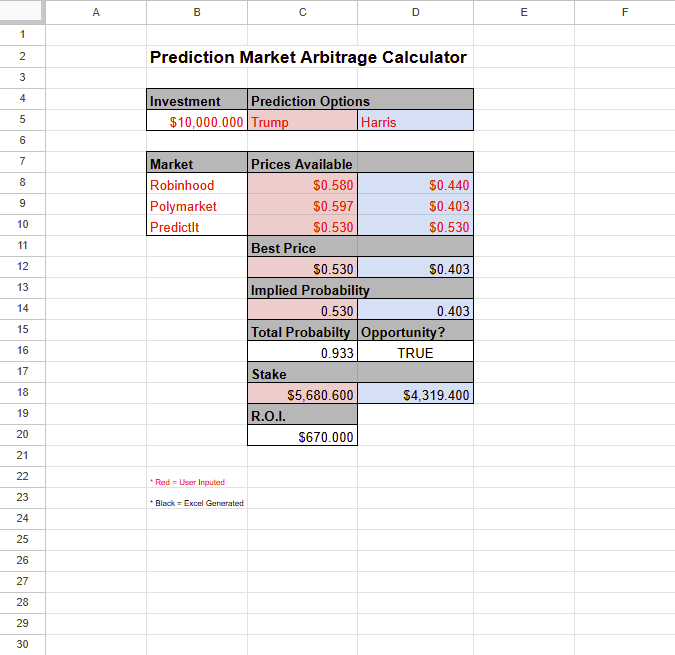

Profit from Prediction Market Arbitrage
Discover risk-free opportunities through prediction markets.
Capitalize on market inefficiencies.
Author: Dan, Posted:11/5/24, Updated:11/5/24
Prediction markets present a unique opportunity for investors to capitalize on pricing discrepancies through arbitrage. In this example,
we’ll explore an arbitrage strategy across three major prediction markets—Robinhood, Polymarket, and PredictIt—on potential outcomes for "Trump" vs. "Harris."
By carefully distributing capital based on each option’s best available price, you can lock in a risk-free return, regardless of the actual outcome.
To find the arbitrage opportunity, we first identify the best price for each outcome across markets. This is done by looking for the lowest cost for each outcome,
allowing us to calculate the implied probability of each outcome based on market price.
- For Trump: the best price is $0.530 on PredictIt.
- For Harris: the best price is $0.403 on Polymarket.
We calculate the implied probabilities for each candidate:
- Trump's Implied Probability = 1 / 0.530 ≈ 53.0%
- Harris's Implied Probability = 1 / 0.403 ≈ 40.3%
Combined Implied Probability = Trump’s Implied Probability + Harris’s Implied Probability = 53.0% + 40.3% = 93.3% (0.933).
Since this sum is less than 1 (100%), it indicates an arbitrage opportunity.
Next, we determine how to allocate a total investment of $10,000 across the two outcomes to ensure a profit regardless of the result. This involves staking a proportion of the total investment in line with each outcome's implied probability.
- Trump Stake = Total Investment × (1 - Harris's Implied Probability) = $10,000 × (1 - 0.403) ≈ $5,680
- Harris Stake = Total Investment × (1 - Trump's Implied Probability) = $10,000 × (1 - 0.530) ≈ $4,319
With our stakes in place, we can calculate the guaranteed profit from this arbitrage opportunity.
- Total Payout (if Trump Wins) = Trump Stake / Trump’s Best Price = $5,680 / 0.530 ≈ $10,679
- Total Payout (if Harris Wins) = Harris Stake / Harris’s Best Price = $4,319 / 0.403 ≈ $10,707
Regardless of the outcome, we achieve a total payout greater than the initial investment of $10,000. The profit is calculated as:
- Profit = Total Payout - Total Investment
- R.O.I. = Profit / Total Investment × 100
- For example, if Trump wins: Profit = $10,679 - $10,000 = $679, and R.O.I. ≈ 6.79%
This approach enables investors to generate profit by exploiting market inefficiencies in prediction markets without relying on the outcome. Arbitrage strategies like this can offer risk-free returns, allowing you to benefit from combined implied probability sums below 1.
Here is an image containing the Prediction Market Arbitrage Calculator:

Or Click Here to View/Download via Google Sheets